AI産業のビルディングブロック 第2回
AIデータセンターは本当に儲かるのか？──54億ドルの新契約から読み解くApplied Digitalのビジネスモデル
シリーズ第1回では、AI産業を7つの階層（ビルディングブロック）に分け、誰が何を作り、誰が何に投資しているのかを整理した。 第2回では、その中の「02 データセンター施設」の階層を取り上げる。 半導体でも、クラウドサービスでもない。AIを動かすための「場所」と「電力」を貸す事業は、本当に儲かるのか。 ▶ 第1回：AI産業の全体像──誰が何を作り、誰が何に投資し、誰が利益を得るのか？
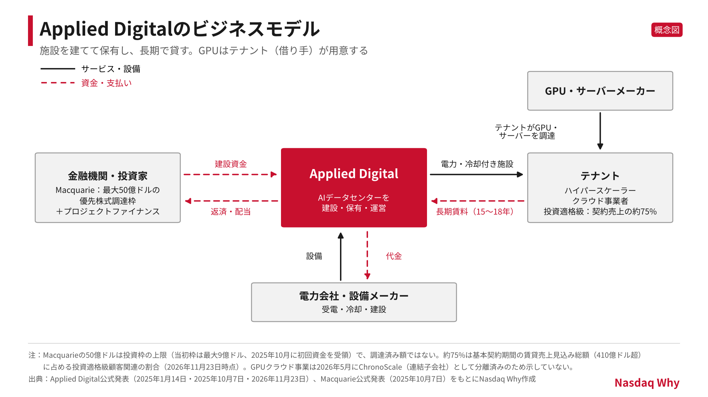
1．Applied Digitalとはどのような会社なのか
Applied Digitalは、米国テキサス州ダラスに本拠を置くデータセンター開発・運営企業だ。
現在の事業の出発点は2021年。もともとはApplied Blockchainという名称で、ビットコインなどの暗号資産のマイニング向けインフラを提供していた。2022年4月にNASDAQに上場し、同年11月に現在の社名に変更している。
マイニング事業では、大量の電力を安定的に確保し、高密度のコンピューター設備を稼働させる必要がある。
この経験が、AIデータセンター事業にも生かされている。
現在の主な提供サービスは以下のとおりだ。
- データセンターの設計・開発・建設
- 大容量の電力供給インフラ
- 高密度GPUに対応する高度な冷却設備
- 通信・ネットワークインフラ
- データセンターの保有・運営
- クラウド事業者への長期賃貸
簡単に言えば、AI時代の高度な技術を備えた不動産賃貸ビジネスである。
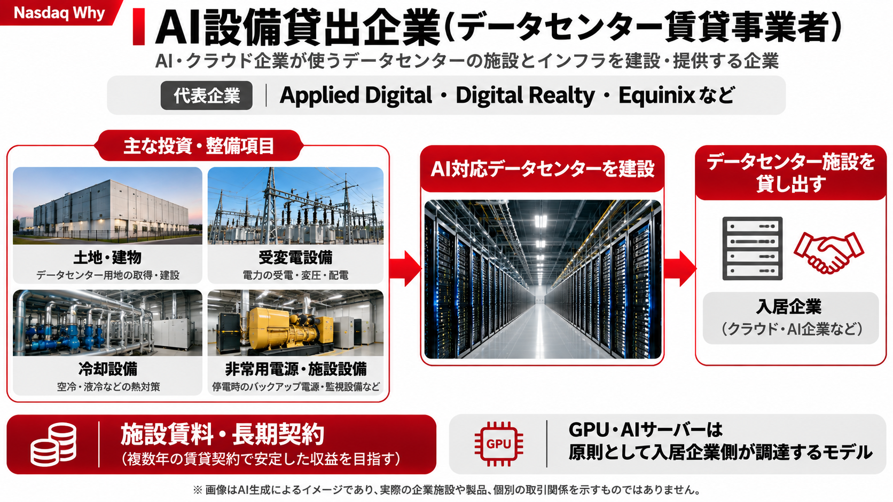
半導体を製造する企業でも、AIサービスそのものを販売する企業でもない。
AIサービスを提供する企業が必要とする物理的インフラを整備し、長期間貸し出すことで売上を得る企業だ。
2024年9月には、NVIDIAやRelated Companiesなどを引受先とする総額1億6,000万ドル（発行費用控除前）の第三者割当増資を実施した（49,382,720株、1株3.24ドル）。NVIDIA単独で1億6,000万ドルを出資したわけではない点には注意が必要だ。2025年にはAIクラウド事業者CoreWeaveと合計400MW、基本期間約15年間の大型賃貸契約を締結するなど、事業を急速に拡大してきた。
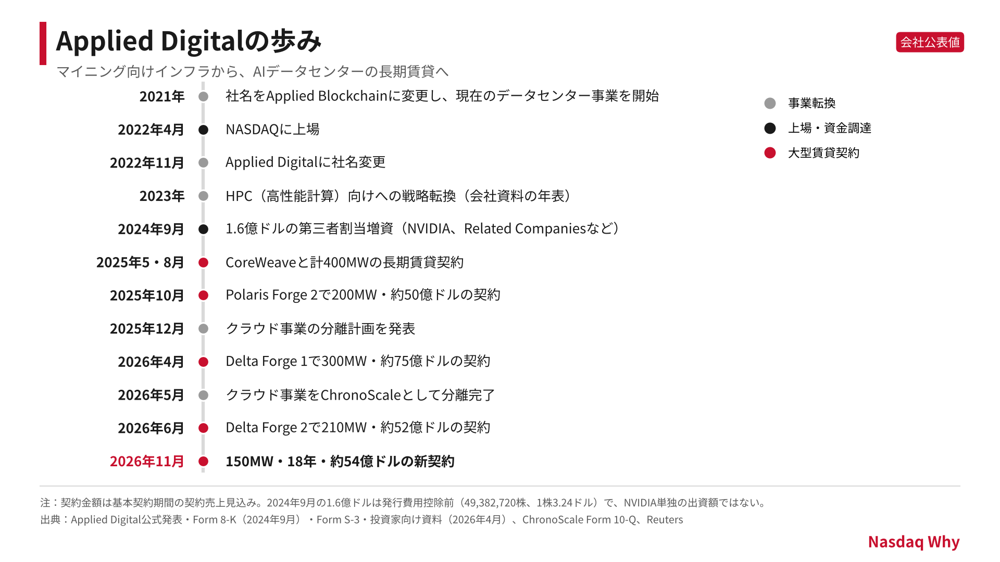
2．ネオクラウドとの違い──クラウド事業をChronoScaleとして分離
第1回で見たように、AIの計算能力を売る「ネオクラウド」と、施設を貸す「データセンター賃貸事業者」は、まったく別のビジネスである。
実はApplied Digital自身も、かつては両方の事業を持っていた。自社でGPUを保有し、計算能力を販売する「Applied Digital Cloud」というクラウド事業である。
しかし同社は、このクラウド事業を切り離した。
| 項目 | 内容 |
|---|---|
| 分離計画の公表 | 2025年12月29日 |
| 分離の完了 | 2026年5月5日 |
| 分離の方法 | クラウド事業をEKSO Bionics Holdingsに拠出し、同社がChronoScaleに社名変更 |
| Applied Digitalへの割当株式 | 約1億3,822万株 |
| 分離完了時点（2026年5月5日）のApplied Digitalの保有比率 | 約97% |
| Applied Digitalの会計年度末（2026年5月31日）時点の保有比率 | 約96% |
| Applied Digitalとの関係 | 連結子会社 |
| 上場市場・ティッカー | NASDAQ・CHRN |
| GPU配備数（2026年8月31日時点） | NVIDIA H100 6,144基 |
| 施設 | 第三者のコロケーション施設（コロラド州、ミネソタ州、ユタ州） |
Applied DigitalのCEOは、分離の理由として、クラウド事業がデータセンター事業の顧客候補と競合してしまう点を挙げている。施設を貸したい相手であるクラウド事業者と、自社のクラウド事業が同じ市場で競争していたのである。
また、GPUクラウド事業とデータセンター賃貸事業では、必要な資金の性格やリスクが大きく異なる。分離によって、それぞれが別々に資金を調達しやすくなるという狙いもある。
ただし、事業分離は資本関係の解消を意味しない。Applied DigitalはChronoScaleの株式を分離完了時点（2026年5月5日）で約97%、自社の会計年度末（2026年5月31日）時点で約96%保有しており、ChronoScaleは引き続きApplied Digitalの連結子会社である。Applied Digitalは、決算発表でChronoScaleの業績を連結財務諸表に含める一方、非GAAP指標からは除外していると説明している。
また、経営支援契約や融資枠（グリッドノート）の提供など、両社の取引関係も続いている。分離後もApplied Digitalは、ChronoScaleを通じてGPUクラウド事業に関与し続ける形である。
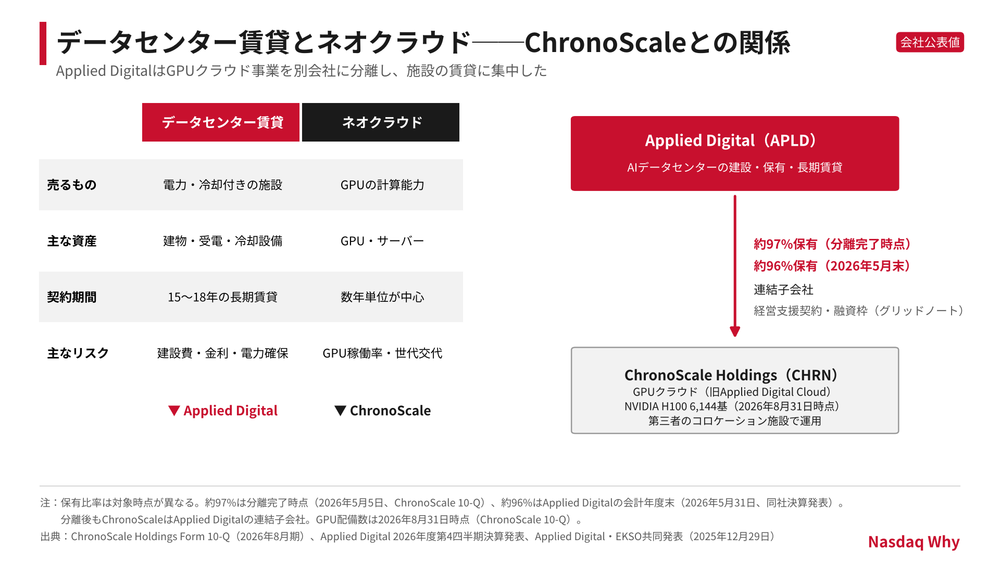
ChronoScaleはその後、2026年8月27日にMicrosoftとの50MW規模のAI計算基盤の展開計画を発表している（金額や購入規模は非開示）。
本記事では、Applied Digitalの中核事業であるデータセンター賃貸事業に焦点を当てる。
3．18年間で54億ドルの大型契約
2026年11月23日午前8時（米国東部標準時間、日本時間同日午後10時）、Applied Digitalは、投資適格級の信用力を持つ大手クラウド事業者との新規契約を発表した。
契約相手の企業名は公表されていない。
契約の概要は以下のとおりである。
| 項目 | 契約内容 |
|---|---|
| IT電力容量 | 150MW |
| 基本契約期間 | 18年間 |
| 基本契約売上見込み | 約54億ドル |
| 年平均売上換算 | 約3億ドル |
| 全更新オプション行使時の期間 | 33年間 |
| 全更新時の売上見込み | 約127億ドル |
| 設備引き渡し開始予定 | 2028年上半期 |
54億ドルは、18年間の基本契約に基づく賃貸売上の見込みであり、現時点で受け取った金額ではない。
同様に、127億ドルはすべての契約更新オプションが行使された場合の潜在的な売上であり、確定した売上ではない。
また、施設の引き渡しには、開発の進捗、電力会社との取り決め、規制当局の承認などが条件となる。
4．AIデータセンターの賃貸単価は上昇しているのか
今回の契約で特に注目したいのは、契約総額だけではない。
過去の契約と比較すると、IT電力容量当たりの売上見込みが上昇していることがわかる。
2026年に発表された3件の契約を比較してみよう。
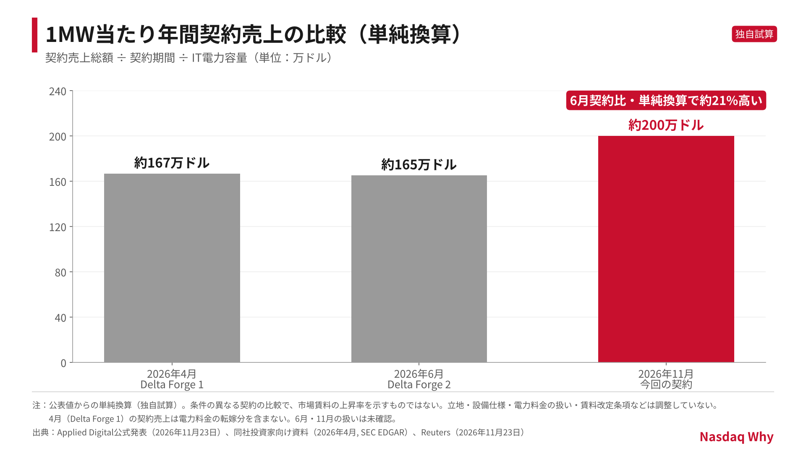
| 項目 | 2026年4月（Delta Forge 1） | 2026年6月（Delta Forge 2） | 2026年11月 |
|---|---|---|---|
| IT電力容量 | 300MW | 210MW | 150MW |
| 契約期間 | 約15年 | 15年 | 18年 |
| 契約売上総額 | 約75億ドル | 約52億ドル | 約54億ドル |
| 年平均売上換算 | 約5億ドル | 約3.47億ドル | 約3億ドル |
| 1MW当たり年間売上換算 | 約167万ドル | 約165万ドル | 約200万ドル |
計算式は、契約売上総額を契約期間とIT電力容量で割ったものである。
4月と6月の契約はいずれも1MW当たり年間約165万ドル前後だったのに対し、11月の契約は約200万ドルとなった。6月の契約と比べると、単純換算で約21.2%高い。
ただし、これは条件の異なる契約同士を単純換算で比べたものであり、市場の賃料が21.2%上昇したことを示すものではない。
Applied Digital自身も、今回の契約は従来の契約より有利な商業条件を含み、価格も高くなったと説明している。
ただし、施設の立地、設備仕様、電気料金の扱い、賃料改定条項などが同一とは限らない。なお、4月の契約売上には顧客に転嫁する電力料金相当分が含まれていないことが会社資料で示されているが、他の契約で同じ扱いかどうかは確認できていない。
したがって、約21.2%という数字は単純換算による比較であり、AIデータセンター市場全体の賃料上昇率を示すものではない。
それでも、AIインフラ事業の価格形成を考えるうえで、注目すべきデータである。
5．1GWのAIデータセンターは、年平均でいくらの賃貸売上を生むのか
今回の契約を基準に、AIデータセンターの規模と年平均賃貸売上の関係を試算してみる。
150MWで年間平均3億ドルの売上に相当するため、1MW当たりでは年間200万ドルとなる。
この条件を他の規模に単純に当てはめると、以下のようになる。
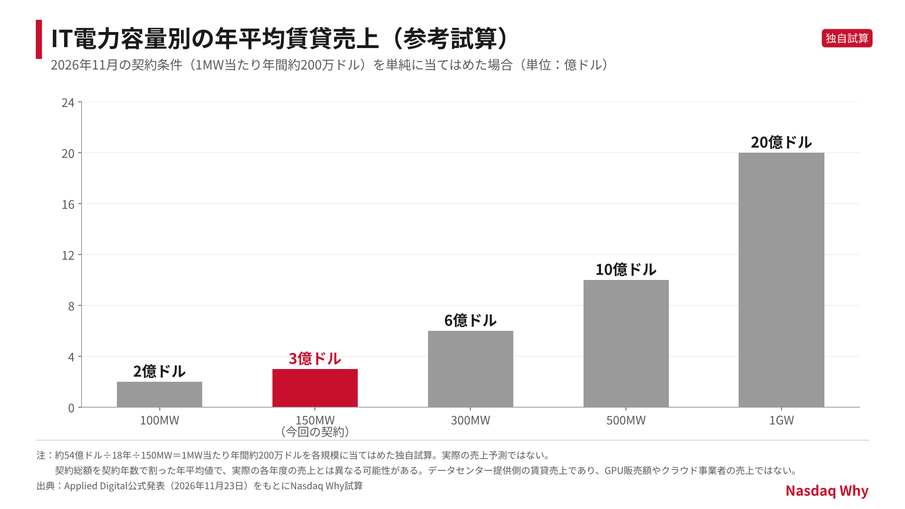
| IT電力容量 | 年平均賃貸売上の参考試算 |
|---|---|
| 100MW | 2億ドル |
| 150MW | 3億ドル |
| 300MW | 6億ドル |
| 500MW | 10億ドル |
| 1GW | 20億ドル |
1GW規模のAIデータセンターでは、年平均20億ドルもの賃貸売上に相当する計算になる。
もちろん、これは今回の契約条件をそのまま拡大した参考試算であり、実際の売上予測ではない。また、契約総額を契約年数で割った年平均値であるため、賃料改定条項などにより、実際の各年度の売上とは異なる可能性がある。
さらに、この金額はデータセンターを提供する側の売上である。
NVIDIAのGPU販売額でも、クラウド事業者がAIサービスで得る売上でもない。
第1回で見たように、AI産業には、半導体販売、データセンター賃貸、クラウドサービスという異なる収益構造が存在するのである。
6．AIデータセンターの建設にはいくらかかるのか
Applied Digitalが2026年4月に公表した投資家向け資料には、AIデータセンター事業の経済性を理解するための興味深い数字が掲載されている。
対象は、米国ルイジアナ州のDelta Forge 1というデータセンター開発案件である。
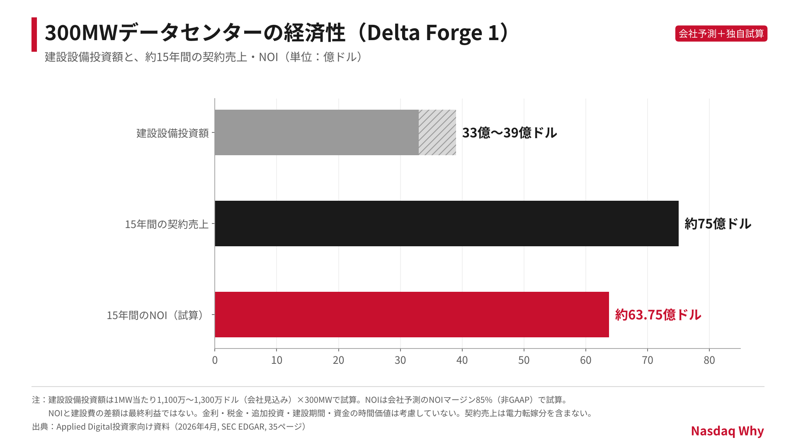
| 項目 | 会社公表値・試算値 |
|---|---|
| IT電力容量 | 300MW |
| 基本契約期間 | 約15年間（5年の延長オプション×3回） |
| 契約売上総額 | 約75億ドル |
| 1MW当たり設備投資額 | 1,100万～1,300万ドル |
| 施設建設設備投資総額（試算） | 33億～39億ドル |
| 年平均売上（試算） | 約5億ドル |
| 施設純営業収益率（会社予測） | 85%±3ポイント |
300MWのデータセンターを建設するために必要な設備投資額は、33億～39億ドルとなる。
これに対して、約15年間の契約売上は約75億ドルだ。
なお、会社資料によると、この75億ドルには顧客に転嫁する電力料金相当分は含まれていない。
ここで注意したいのは、この建設設備投資額はデータセンター開発事業者側の設備投資見込みであり、入居するクラウド事業者のGPUなどの調達費用まで含めたAIシステム全体の投資額とは異なるという点だ。
7．施設純営業収益率85%の意味
同社が示すDelta Forge 1の施設純営業収益率（NOIマージン）の予測は85%±3ポイントである。
NOIとは何か
NOIとは、Net Operating Income（純営業収益）の略で、不動産やデータセンターなどの施設単位の収益性を評価するための指標である。
Applied Digitalの会社資料では、NOIとNOIマージンを次のように定義している。
NOI＝賃貸収入－（施設の運営費用＋固定資産税＋保険料）
NOIマージン＝NOI÷賃貸収入×100
会社資料では、NOIに減価償却費が含まれないことが明記されている。また、借入金の支払利息、本社管理費、法人税は定義に含まれていない。
つまりNOIは、施設単位の収益性を示す指標である。現金収支そのものではなく、会社全体の利益とも異なる。
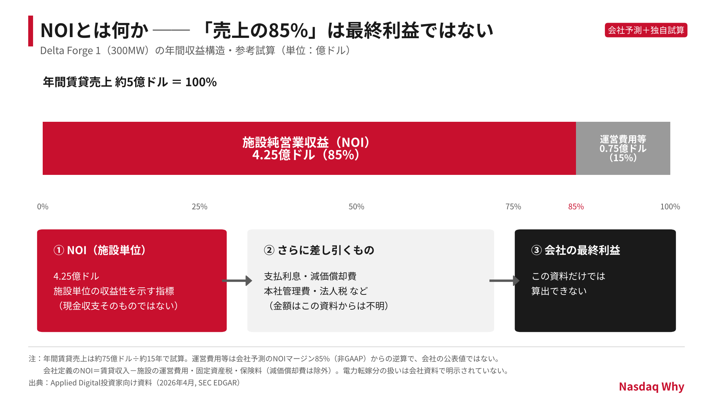
今回のDelta Forge 1の参考試算では、
- 年間賃貸売上：約5億ドル
- 運営費用等：約0.75億ドル（売上の15%）
- 年間NOI：約4.25億ドル（売上の85%）
となる。
施設単位では売上の85%に相当する純営業収益が見込まれているが、これは会社全体の営業利益や最終利益を意味するものではない。最終利益を求めるには、NOIからさらに支払利息、減価償却費、本社管理費、法人税などを差し引く必要がある。
また、この85%±3ポイントは会社が示した非GAAPベースの将来予測であり、実際の結果は大きく異なる可能性があると会社自身も注記している。顧客に転嫁する電力料金をNOIマージンの計算に含めるかどうかは、会社資料では明示されていない。
投資回収の概算
では、会社予測の中心値である85%を用いて、投資回収の概算を計算してみよう。
- 年平均売上：約5億ドル
- NOIマージン：85%
- 年平均施設純営業収益：約4億2,500万ドル
- 建設設備投資額：33億～39億ドル
建設設備投資額を年平均施設純営業収益で割ると、単純回収期間は約7.8～9.2年となる。
約15年間の基本契約期間に対して、稼働開始後8～9年程度で建設設備投資相当額を回収できる計算だ。
見方を変えると、年間NOI約4.25億ドルは、建設設備投資額に対して、33億ドルの場合で約12.9%、39億ドルの場合で約10.9%に相当する。ただし、これは年間NOIを建設費で割った単純な比率であり、内部収益率（IRR）や株主にとっての投資利回りではない。
会社予測の範囲（82%～88%）で計算すると、単純回収期間は約7.5～9.5年となる。
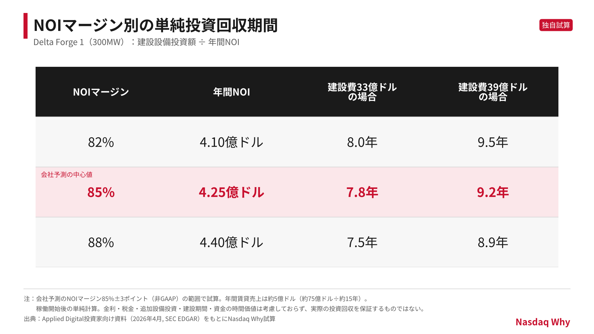
| NOIマージン | 年間NOI | 建設費33億ドルの場合 | 建設費39億ドルの場合 |
|---|---|---|---|
| 82% | 4.10億ドル | 8.0年 | 9.5年 |
| 85% | 4.25億ドル | 7.8年 | 9.2年 |
| 88% | 4.40億ドル | 7.5年 | 8.9年 |
さらに、15年間の施設純営業収益を単純計算すると、約63億7,500万ドルとなる。
| 項目 | 参考試算 |
|---|---|
| 15年間の契約売上 | 75億ドル |
| 15年間の施設純営業収益 | 約63.75億ドル |
| 建設設備投資額 | 33億～39億ドル |
| 施設純営業収益と建設設備投資額の差額 | 約24.75億～30.75億ドル |
ただし、この差額は最終利益ではない。
実際には、建設期間中の資金負担、借入金利、税金、追加設備投資、賃料の変動、契約条件などを考慮しなければならない。
将来の収益を現在価値に割り引く計算も行っていない。
したがって、この試算は実際の投資回収期間や投資収益を保証するものではない。
それでも、AIデータセンターの長期賃貸ビジネスが、なぜ巨額の資金を引きつけているのかを理解するための参考になる。
8．Applied Digitalの契約規模は410億ドルを超える
今回の新規契約により、Applied Digitalの契約済み事業規模はさらに拡大した。
2026年11月23日時点の会社発表は以下のとおりである。
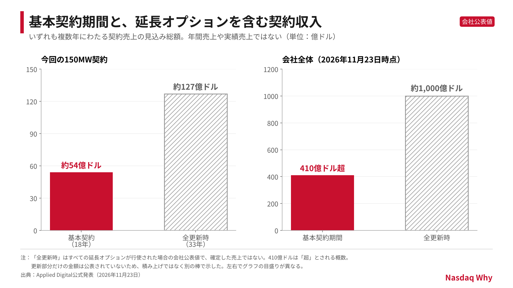
| 項目 | 公表値 |
|---|---|
| 基本契約期間の賃貸売上見込み総額 | 410億ドル超 |
| 全更新オプション行使時 | 約1,000億ドル |
| 契約済みIT電力容量 | 1.6GW超 |
| 電力網接続のピーク負荷 | 2.2GW |
| 投資適格級顧客に関連する基本契約売上の割合 | 約75% |
基本契約期間の売上見込み総額は410億ドルを超える。なお、約75%は、この基本契約期間の賃貸売上見込み総額（410億ドル超）のうち、投資適格級の顧客に関連する分の割合である（2026年11月23日時点の会社発表）。
すべての契約更新オプションが行使された場合には、約1,000億ドルに達する可能性があるという。
繰り返しになるが、これらは複数年にわたる契約売上の総額であり、年間売上や現時点の実績売上ではない。
また、1.6GW超の契約済みIT電力容量についても、そのすべてが現在稼働しているという意味ではない。
9．なぜクラウド事業者は18年間もの契約を結ぶのか
AI半導体の技術革新は非常に速い。
GPUは数年単位で世代交代し、処理能力や電力効率も向上していく。
それにもかかわらず、クラウド事業者はデータセンターについては15年、18年という長期契約を締結している。
その背景として考えられるのが、電力供給と施設確保の難しさである。
AIデータセンターには、GPUだけでなく、以下のようなインフラが必要になる。
- 大規模な電力供給
- 変電・配電設備
- 高密度GPUに対応する冷却設備
- 高速通信ネットワーク
- 建設用地
- 電力網への接続
- 各種規制当局の承認
GPUを購入できても、それを稼働させる場所と電力を確保できなければ、AIサービスは提供できない。
特に電力網との接続や大規模施設の建設には、長い準備期間が必要になる場合がある。
そのため、クラウド事業者が将来のAI需要に備えて、早い段階からデータセンター容量を確保している可能性がある。
第1回で見た「施設賃借型」の調達モデルは、まさにこの選択である。
ただし、今回の契約相手が長期契約を選択した具体的な理由は公表されていない。
10．AIデータセンター投資を支える金融の仕組み
Applied Digitalの事業拡大を理解するうえでは、資金調達も重要である。
同社は2025年1月、Macquarie Asset Management（MAM）と、最大50億ドルの優先株式による資金調達枠で合意した。このうち当初の出資枠は最大9億ドルで、MAMは残りの最大41億ドルについて、将来のデータセンター案件に投資する権利を持つ。Applied Digitalは2025年10月に初回の資金を受け取ったと発表している。
なお、50億ドルはあくまで投資枠の上限であり、すでに調達済みの金額ではない。累計でいくら調達したかは、今回確認できた資料では明らかになっていない。
同社は今回の新契約についても、このMAMとの提携と、長期賃貸契約を基盤としたプロジェクトファイナンスによって、施設建設資金を確保する方針を示している。
この仕組みでは、信用力の高いクラウド事業者との長期契約が、金融機関による資金提供の判断材料となる。
AI産業の資金の流れを整理すると、次のようになる。
① 金融機関・インフラ投資家が建設資金を提供する。
② Applied Digitalなどがデータセンターを開発する。
③ クラウド事業者がデータセンターを利用し、賃貸料金を支払う。
④ クラウド事業者などがGPUやサーバーを調達する。
⑤ AIサービスを企業や個人に販売する。
⑥ データセンター事業者は賃貸売上から運営費や資金調達費用などを負担する。
AIへの巨額投資は、半導体メーカーだけで完結するものではない。
不動産、電力、建設、金融を含む巨大な産業構造へと広がっている。
一方で、借入金利の上昇や建設費の増加、顧客への依存、施設の引き渡し遅延などは、データセンター事業者にとって重要なリスクとなる。
11．半導体産業への影響
Applied Digitalのような企業の長期契約は、将来のAI関連設備需要を考えるうえでも参考になる。
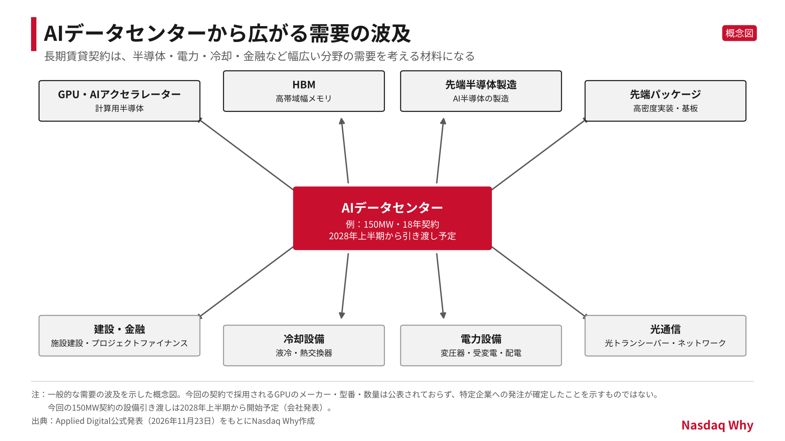
| 関連分野 | 想定される需要 |
|---|---|
| GPU・AIアクセラレーター | NVIDIA、AMDなどの計算用半導体 |
| HBM | AIアクセラレーター向け高帯域幅メモリ |
| 先端半導体製造 | 高性能AI半導体の製造 |
| 先端パッケージ | 高密度実装技術、基板 |
| 光通信 | 高速光トランシーバー、ネットワーク設備 |
| 電力設備 | 変圧器、受変電設備、配電設備 |
| 冷却設備 | 液冷、冷却液分配装置、熱交換器 |
| 建設・金融 | 施設建設、プロジェクトファイナンス |
今回の150MWの契約については、2028年上半期からの設備引き渡しが予定されている。
このため、将来の半導体や電力・冷却設備の需要を先行して考える材料になる可能性がある。
ただし、採用されるGPUのメーカー、型番、数量は公表されておらず、特定の半導体企業への発注が確定したことを示すものではない。
12．Nasdaq Whyの視点──AI産業を支える新たな収益構造
これまでAI産業の成長を分析する際、中心となっていたのはGPUの出荷数量や半導体メーカーの売上だった。
しかし、Applied Digitalの契約内容からは、別の視点が見えてくる。
それは、AIを稼働させるためのインフラそのものが、長期的な収益を生み出す資産になりつつあるということだ。
GPUは世代交代する。
一方、データセンターの建物、電力インフラ、通信設備などは、改修や更新を伴いながら、より長い期間利用される可能性がある。
Applied Digitalが、GPUを保有するクラウド事業を切り離し、施設の賃貸に集中したのも、この時間軸の違いを反映した判断と見ることができる。
今後、AI設備投資を分析する際には、GPUの販売金額だけでなく、確保された電力容量、データセンターの建設費、長期賃貸契約、資金調達コストにも注目する必要があるだろう。
AI産業の成長を理解するためには、半導体だけではなく、半導体を動かす場所と電力、そして資金の流れを見ることも重要なのである。
次回の第3回では、GPUの計算能力を販売するネオクラウドの収益構造を取り上げる予定である。
▶ 前回（第1回）：AI産業の全体像──誰が何を作り、誰が何に投資し、誰が利益を得るのか？
シリーズ「AI産業のビルディングブロック」
- 第1回：AI産業の全体像──誰が何を作り、誰が何に投資し、誰が利益を得るのか？
- 第2回：AIデータセンターは本当に儲かるのか？──54億ドルの新契約から読み解くApplied Digitalのビジネスモデル（本記事）
- 第3回：ネオクラウドは本当に儲かるのか？──CoreWeave・Nebius・Lambdaの収益構造（予定）
- 関連シリーズ：半導体特集
情報の確認状況
新規契約の内容、契約売上見込み、設備引き渡し予定についてはApplied Digitalの公式発表およびReutersの報道を参照。
2026年6月のDelta Forge 2の契約（210MW・15年・約52億ドル）についてはReutersの報道を参照。
Delta Forge 1の契約売上、設備投資額、NOIの定義、施設純営業収益率についてはSEC EDGARに掲載された投資家向け資料を参照。
ChronoScaleの分離完了日、割当株式数、分離完了時点の保有比率、GPU配備数、施設についてはChronoScaleのForm 10-Qを参照。2026年5月31日時点の保有比率と連結関係はApplied Digitalの2026年度第4四半期決算発表を参照。保有比率は時点により異なるため、必ず対象時点を併記した。
2024年9月の資金調達はApplied Digitalの公式発表およびForm 8-Kを参照。調達額は発行費用控除前。
Macquarieとの資金調達枠は、2025年1月の共同発表と2025年10月のMacquarie公式発表を参照。累計の調達済み額は未確認。
投資適格級約75%の分母（基本契約期間の賃貸売上見込み総額）と基準日（2026年11月23日）は、2026年11月23日の公式発表で確認。
新規契約のSEC契約書類、詳細な賃料条項、契約相手の企業名、GPUの調達内容については未確認。
業態のイメージ図に使っている設備の写真風の画像はAI生成によるイメージであり、実際の企業施設や製品、個別の取引関係を示すものではない。
本文中の年間売上、容量当たり売上、設備投資総額、投資回収期間などは、公表数値を基にしたNasdaq Whyの独自試算を含む。
本記事は公開情報に基づく産業分析を目的としたものであり、特定の金融商品の売買を推奨するものではない。
出典
- Applied Digital公式発表（2026年11月23日）
- Applied Digital投資家向け資料（2026年4月、SEC EDGAR掲載資料、35ページほか）
- Applied Digital公式発表一覧・発表時刻
- Reuters（2026年11月23日）
- ChronoScale Holdings Form 10-Q（2026年8月31日終了四半期、SEC EDGAR）
- Applied Digital・EKSO共同発表（2025年12月29日、クラウド事業の分離計画）
- Applied Digital Form S-3（2023年、SEC EDGAR、上場・社名変更の経緯）
- Applied Digital公式発表（2024年9月、1億6,000万ドルの資金調達）
- Applied Digital Form 8-K（2024年9月5日）
- Applied Digital Form 8-K（2026年7月27日、2026年度第4四半期・通期決算。ChronoScaleの保有比率約96%・連結）
- Applied Digital・Macquarie共同発表（2025年1月14日、最大50億ドルの資金調達枠）
- Macquarie Asset Management公式発表（2025年10月7日、初回出資の完了）
- ChronoScale Form 8-K（2026年8月27日、Microsoftとの50MW展開計画）